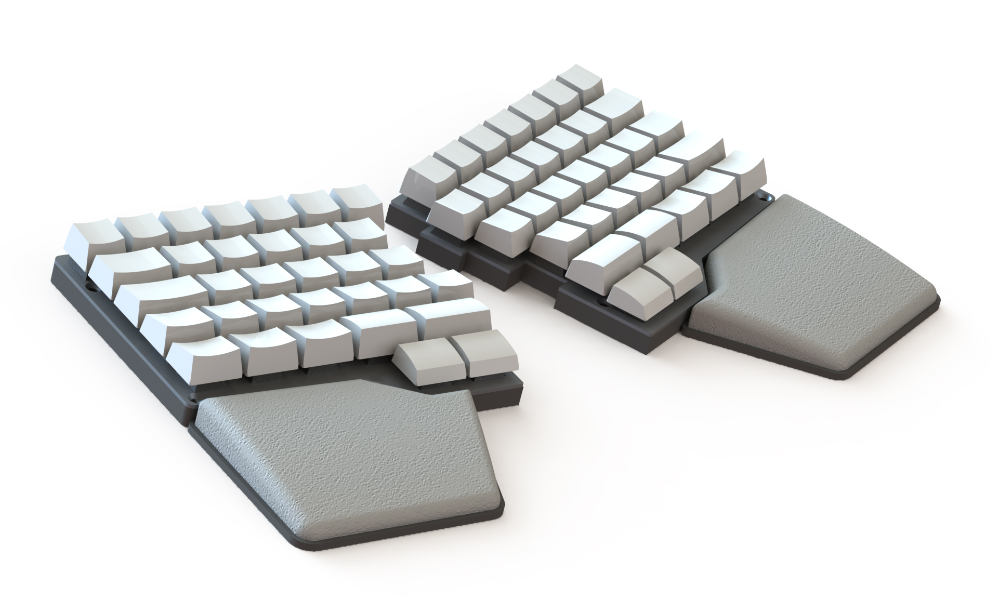
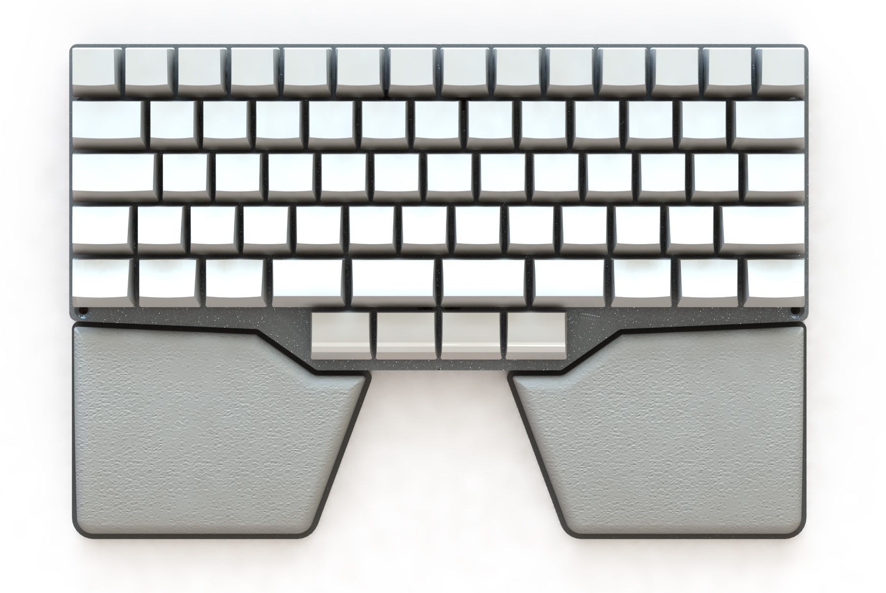
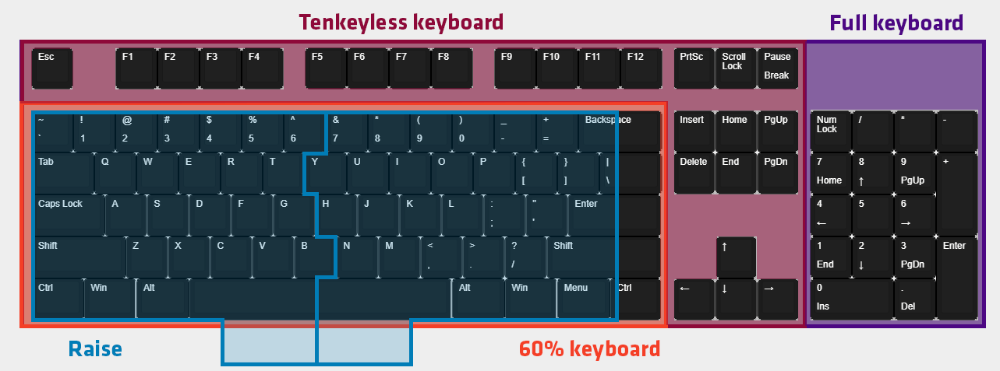
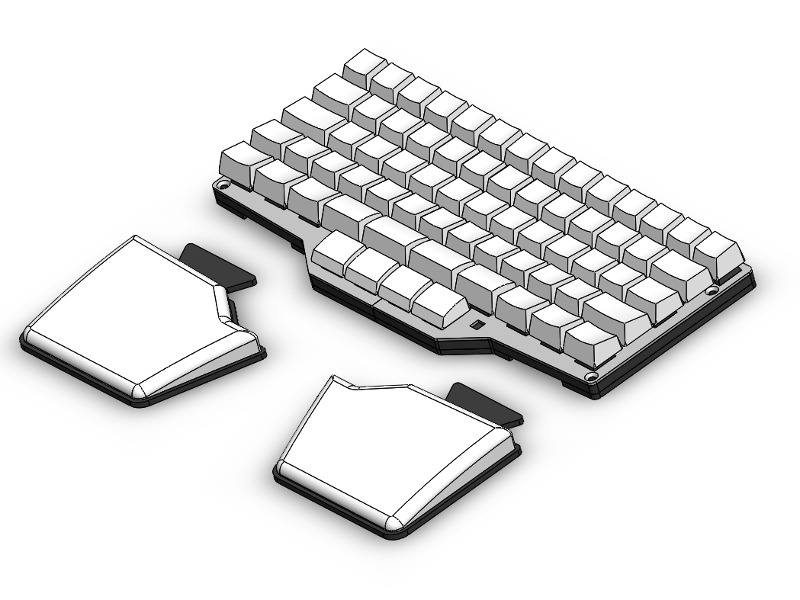

Our new split keyboard: Raise
During the last 9 months developing Shortcut we’ve learnt a lot about how to build the best gaming keyboard, but what we’ve learnt the most about is our users and their preferences.
Shortcut’s goal is to improve the gaming experience of our users by increasing health, performance and comfort but it doesn’t come free. To be able to enjoy these benefits you need to spend time and effort rebuilding your habits.
During our testing we quickly realized that even though some people were fine rebuilding them, many weren’t. Learning to play wasn’t a problem, it took around a week, but learning to type was very challenging for most, it required a couple of months of daily practice.
Many of our users only use half of the Shortcut to play games and use a regular keyboard to type. In the worst case scenario, potential users won’t be able to benefit from the Shortcut because they don’t have the time to adapt to it.
This situation made us ask ourselves: can we make a keyboard that can increase health, performance and comfort and doesn’t require an adaptation period?
After some weeks tinkering with the idea we made an early prototype (an alpha version), tested it with a few people, received very positive feedback and decided to develop it.
We present you Raise:

What makes this mechanical keyboard better than the other thousand options in the market? Let’s check it’s features:
Split keyboard (or not!)
- By splitting the keyboard you allow your wrist to always be straight and reduce the stress in them. You can angle both sides or separate them to your shoulder width.
- The majority of us don’t have a perfect touch typing technique. When you snap it back together you have a standard dimensioned keyboard to type as you always do.
- By being split you can remove one of the sides and have more space for the mouse

8 thumb buttons
100 years ago typewriters already had a massive space bar and we still have it. Time to improve the design.
- We’ve divided the space bar into 4 and added a row underneath with 4 more buttons, for a total of 4 keys per thumb. This allows us to have keys such as backspace, control or alt in a more comfortable location.

Early stage prototype
Compact design
Most gaming keyboards have way too many keys:

Raise is symmetrical and one key smaller than a 60% split keyboard
- By being smaller than a 60% keyboard you gain a lot of space for the mouse
- It’s symmetrical so left handed can play as comfortably as right handed.
- With software you can configure the arrows, num pad, volume controls and more to be the keys you prefer. Even though it’s a smaller size keyboard you have the functionality of a full keyboard.
Split palm rests
Palm rests elevate your hands to easier access the keys, spread out the the pressure and enable your wrist to be in neutral position, reducing stress in the wrist area. Raise has individual palm rests you can split and angle both sides as you wish.

If you want to read more about palm rests we wrote an article about it.
Customization Software
Raise and Shortcut will share the same firmware and software.
- You’ll be able to create multiple fully configurable layouts. All keys are rebindable and any keys can have macros.
We’ve designed Raise with Shortcut’s core principles in mind: to increase health, performance and comfort of our users. But we added one more, to improve the gaming experience within the first second of usage. We believe that with Raise’s design and features we will achieve it.
Even though it will be challenging, we are going to develop Shortcut and Raise in parallel. We think that they are products for different groups of gamers and all we’ve learnt during Shortcut’s development will massively speed up Raise’s development.